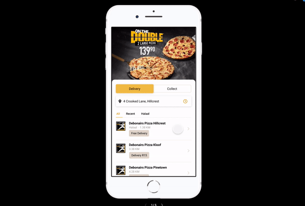

User Research | Product Design | Technical Documentation
One of our clients, YUMBI, is a white-label online food ordering platform where users can place orders from their nearby restaurants. While going through Hotjar recordings to identify patterns of behavior, I noticed that users were spending a lot of time on the home screen of the app. They were also often selecting a store that wouldn’t be able to serve them and would only realize on Checkout, for e.g. they want a delivery order and the store they select is collect-only.
Year
Client
In order to understand the why behind this behavior, I set up some in-person usability tests for our mobile app. Using Facebook’s targeting ads, I gathered a list of potential candidates and then using a simple questionnaire was able to filter them down into users that more or less resembled our target market.
I popped the chosen group of people a mail asking them if they were interested, outlined the details and set up a bunch of interviews for the following week. I wrote the script, printed out consent and NDA letters and prepared for the big day.
I found a very handy tool online that I used in the usability tests called Mr Tappy. It allowed us to let the users use their own device for the test and we would just pop on Mr Tappy and the entire session would be recorded from above. I set up a screen share on Google Hangouts for other team members to join if they wanted to see the sessions in action.
Below is an example of some feedback we received about the store listings on the home screen:
When going through the usability test results, combined with the Hotjar recordings I started to notice a pattern. The less stores shown in the results, the less time the user spent on the page. This makes total sense as we know from Hick’s law that:
“...the more choices you present your users with, the longer it will take them to reach a decision.”
The solution seemed obvious but there was complexity around the corner. We needed to reduce the amount of stores shown, only displaying the relevant options to the user in order to decrease cognitive load. The current app showed every store within a certain radius, which often resulted in 15+ options to choose from, a lot of which wouldn’t fulfill the user’s needs.
What seemed like a simple solution became incredibly complex when we realised how many user scenarios there were on this home screen. There were 12 potential use cases we needed to cater for, and after many (and I mean many) collaboration sessions between myself, the product owner and the lead developer, I put together this flow diagram of the relevant states and how we would cater for each.
I expected the user testing to confirm the hypothesis that there are way too many store listings and that users didn’t want to see irrelevant results but as expected, the user testing revealed a few other issues with the store listing UI in particular:
Below is the final proposed UI update to the store listing to solve the above problems. What is not shown below is that we removed the collect/delivery component from each listing and instead added a radio toggle at the top of the listings so that the user explicitly selects upfront the order type they want. This also helped us show more relevant store results to the user.
With the states enumerated, an order of relevance agreed upon and UI components designed I started on the spec documentation for the developers. Here I outlined the why and the what - I left the how up to them. I wrote detailed acceptance criteria for every use case, and met frequently with the lead developer to ensure that they understood the requirements.
As always, we document metrics before and how they should change in order for the project to be deemed a success. Below are the changes as a result of the project above.
Aside from the above, we received a lot less complaints via our app feedback form. After you have placed an order via the app, you are prompted to submit feedback if you had a bad experience. We monitor the common keywords on a monthly basis and there was a decline in comments relating to the experience of selecting a store and incorrect order types.
